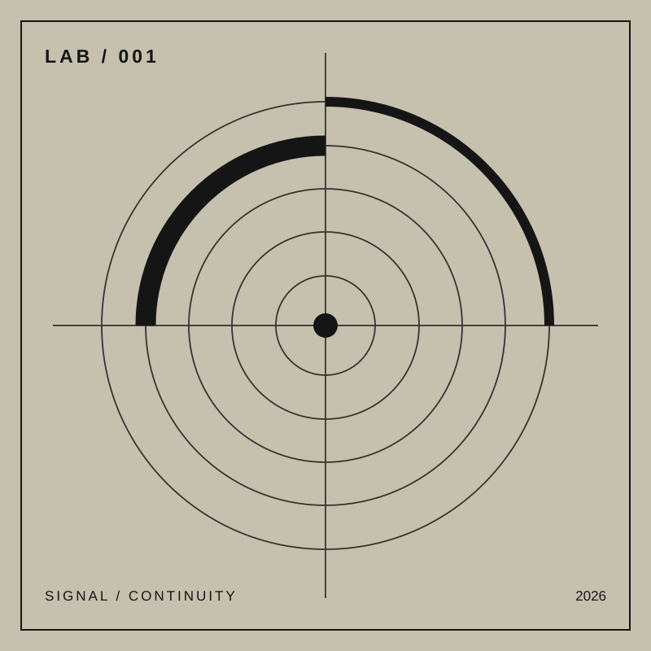

HTML5 AUDIO / MEDIA SESSION / CONTINUOUS STREAM
EDICIÓN DIGITAL / REPRODUCCIÓN CONTINUA
Artista · 2026
Sin reproducción
El audio puede continuar al bloquear la pantalla; el comportamiento depende del navegador y del sistema operativo.
Inicializando…